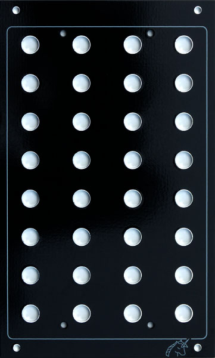

|

NOT AVAILABLE FOR PURCHASE This is a PCB based panel primarily intended for prototyping and testing of new designs, although there is nothing to stop it being used in a permanent set-up. Four of these panels will fit side by side, in a standard 17" rack boat. Holes are spaced at 1" horizontally, and 3/4" vertically. The 8mm holes are suitable for banana sockets and Cliff-style insulated 3.5mm jacks. Pots will be a little loose in these holes. A little packing, or careful alignment will overcome any difficulty. 1/4" switches may require the use of a "shoulder" washer. The front of the panel is copper clad, this forming the earth-plane for the panel. Tracks and pads on the rear of the panel connect to this via through-hole plating in the 8mm holes. The rear of the panel includes tracks and pads for two generic buses, or +VE and -VE power rails to be used with pots. Two links are required to complete the +VE/bus 1 circuit. See the diagram below for their location. Undrilled pads are provided as convenient "centers" for drilling LED holes. The PCB mounting holes match those used on 6" x 2" CGS PCBs. Being made of 2.5mm thick PCB material, there may be some slight bowing.
Notes:
Article, art & design copyright 2013 by Ken Stone
|